3
데스크톱 앱, VS Code 확장, 웹 플랫폼이 같은 렌더러를 씁니다.
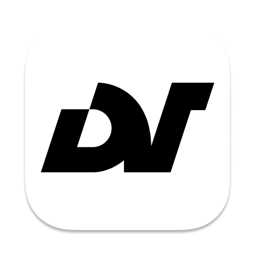
Download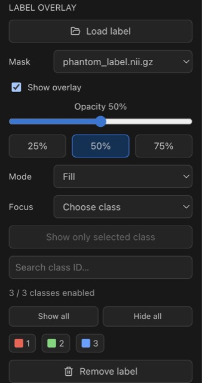
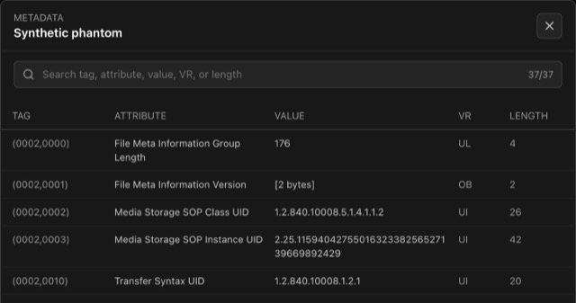
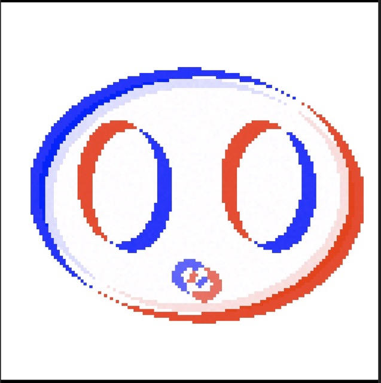
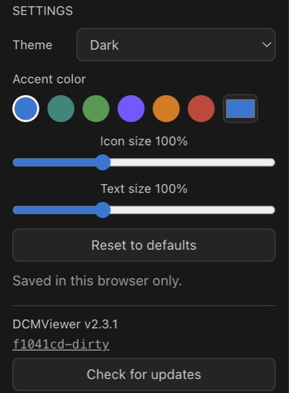
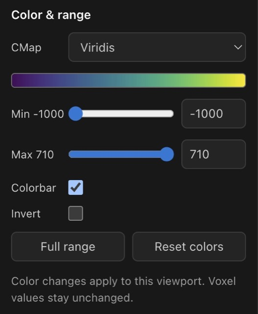
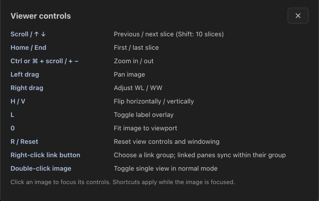
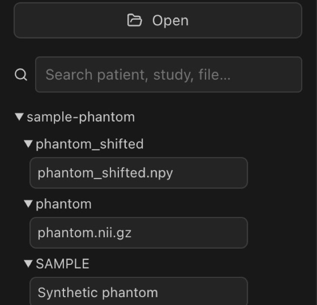
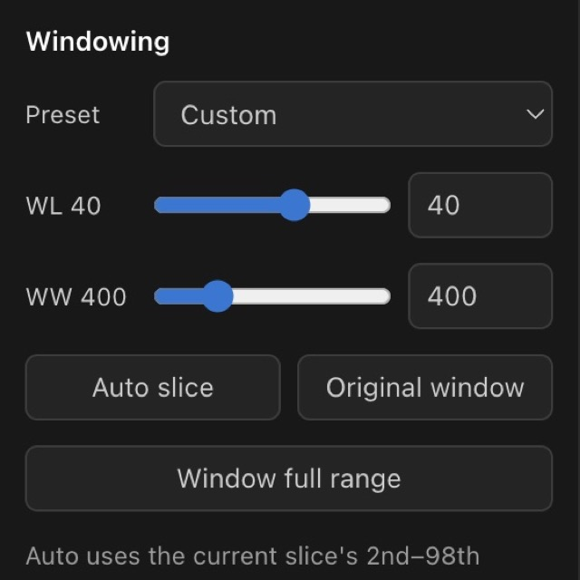
Medical volumes, read closely.
DICOM 시리즈, NIfTI, NumPy 배열을 열어 슬라이스를 넘기고 두 케이스를 나란히 비교하는 오픈소스 뷰어입니다. 원본 파일은 절대 건드리지 않습니다.
CT나 MR 볼륨 하나 확인하려고 무거운 의료 영상 소프트웨어를 띄울 필요는 없습니다. DCMViewer는 모델 출력, 분할 마스크, 정합 결과처럼 연구하면서 쏟아지는 볼륨을 빨리 열어 보는 데 집중합니다. 편집 기능을 뺀 만큼 열고, 넘기고, 비교하는 일이 가볍습니다.
데스크톱 앱, VS Code 확장, 웹 플랫폼이 같은 렌더러를 씁니다.
.dcm .dicom .nii .nii.gz .npy .npz
링크 그룹으로 묶어 함께 움직이는 최대 16개의 뷰.
Grayscale부터 Viridis, Turbo까지. 반전과 값 범위 조절 포함.
예측 마스크를 원본 위에 겹쳐 놓고 클래스별로 켜고 끄며 확인합니다.
SSH·컨테이너 VS Code나 웹 플랫폼에서 큰 볼륨을 내려받지 않고 필요한 단면만 받아 봅니다.
두 시점의 영상을 정합한 뒤 차이 영상으로 무엇이 바뀌었는지 봅니다.
보는 데 필요한 도구는 다 들어 있습니다. 아래 화면은 모두 실제 앱에서 캡처했습니다.
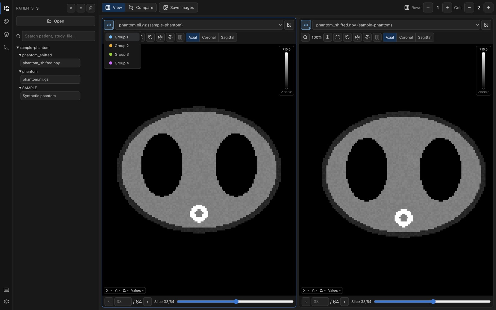
Rows와 Cols로 그리드를 나누고 뷰마다 링크 그룹(1–4)을 지정하면 축, 슬라이스, WL/WW, 확대와 이동이 함께 움직입니다. Ctrl을 누른 채 마우스를 올리면 연결된 모든 뷰의 같은 지점에 십자선이 뜹니다.
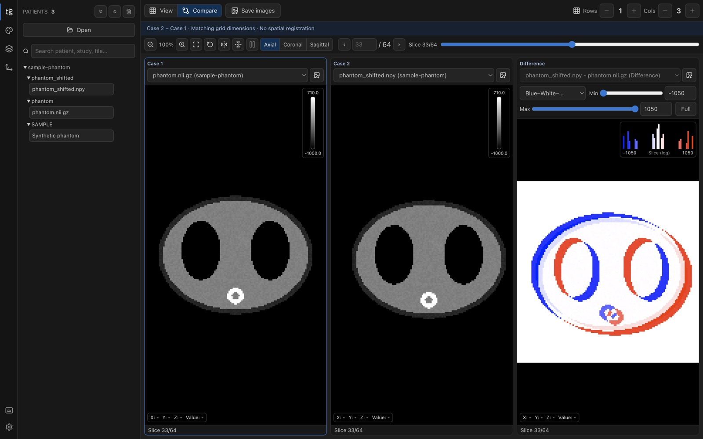
Case 1, Case 2, 그리고 Case 2 − Case 1 차이 영상을 한 줄로 놓고 조작 바 하나로 함께 움직입니다. 차이 패널에는 별도 컬러맵, Min/Max 범위, 현재 단면 히스토그램이 붙습니다.
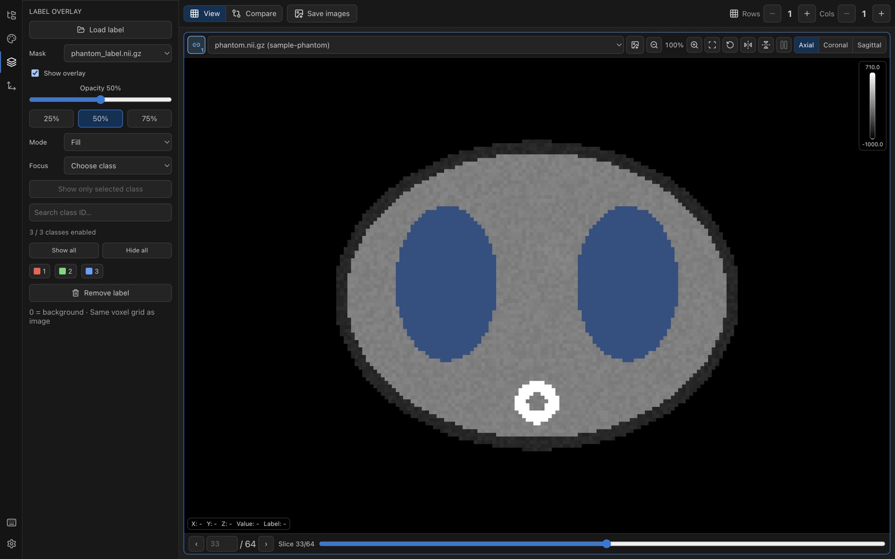
NIfTI, NPY, DICOM 마스크를 영상 위에 겹칩니다. Fill과 Outline, 25·50·75% 투명도, 클래스 검색, 선택한 클래스만 보기를 지원합니다.
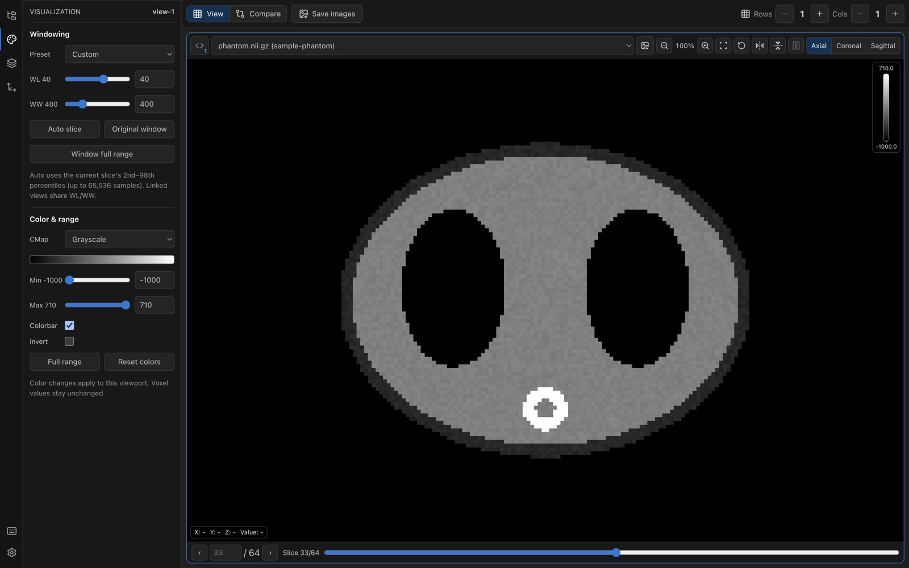
Brain, Lung, Bone, Liver 등 프리셋 8종. Auto slice는 현재 단면의 2–98 백분위로 WL/WW를 잡고, 오른쪽 버튼 드래그로 바로 미세 조정합니다.
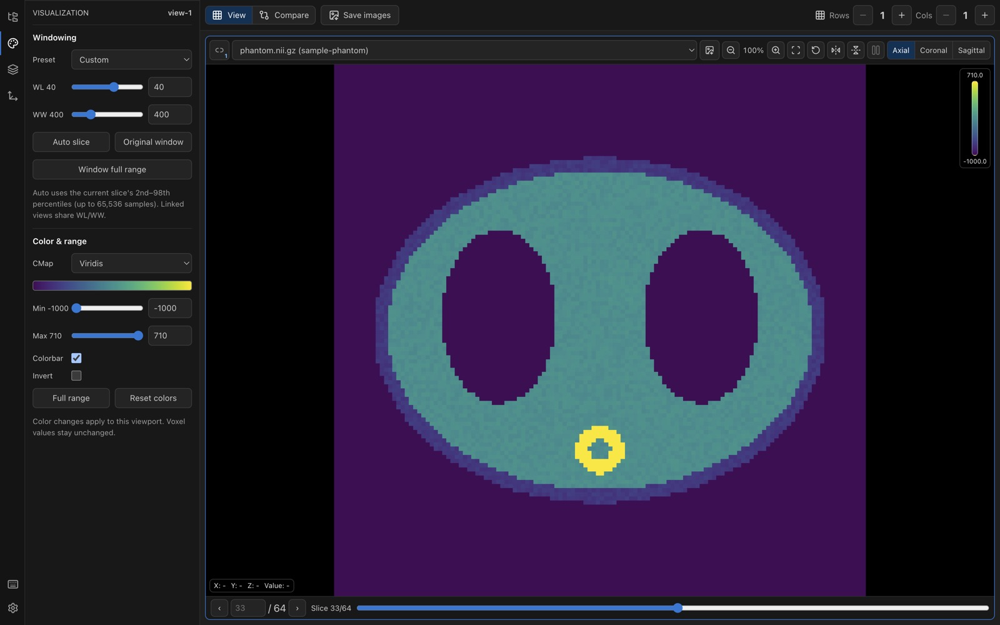
15종 컬러맵, 컬러바, 색상 반전, 값 범위 클리핑. 설정은 뷰포트마다 따로 적용되고 복셀 값은 바뀌지 않습니다.
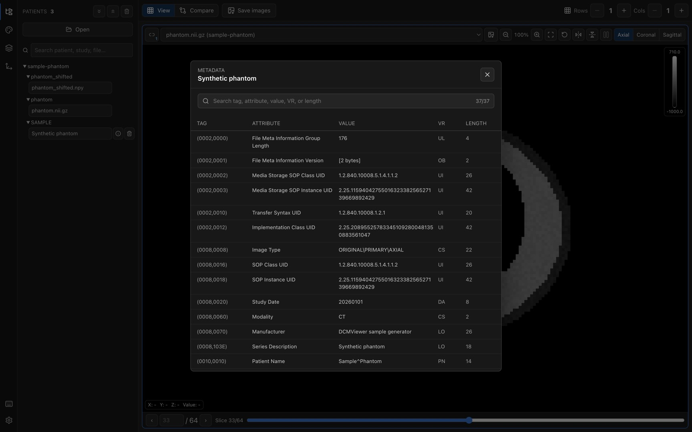
볼륨을 환자, Study, Series 트리로 정리하고 DICOM 태그를 이름, 값, VR로 검색합니다.
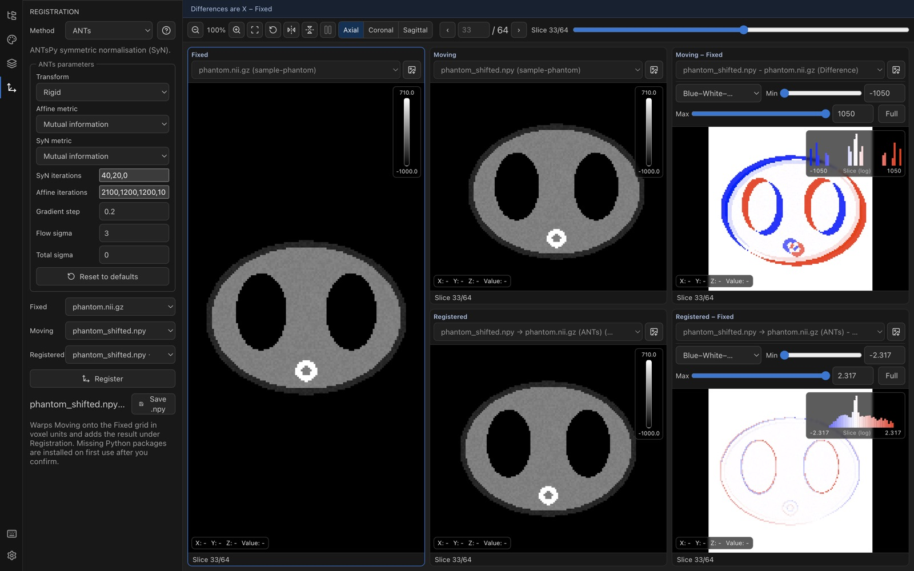
ConvexAdam, ANTs, elastix 중 하나로 Moving 볼륨을 Fixed 격자에 맞춥니다. 진행률과 남은 시간이 보이고 중간에 취소할 수 있습니다.
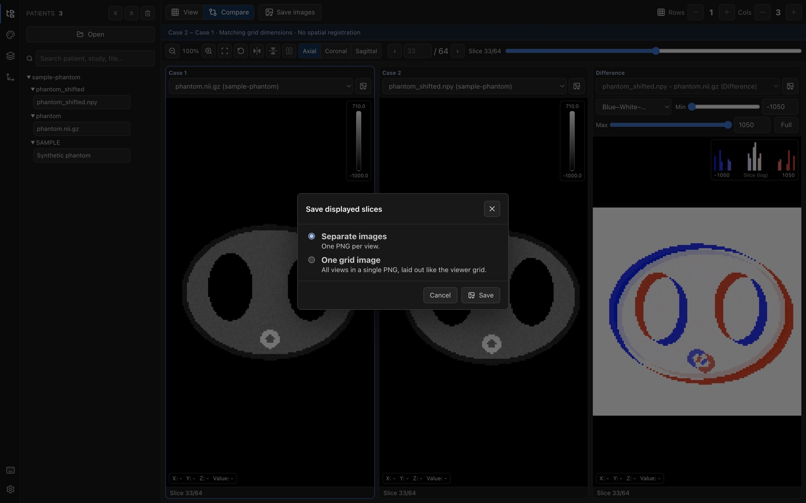
뷰 하나, 또는 그리드 전체를 한 장의 PNG로 저장합니다. 정합 결과는 .npy로 내보냅니다.
Axial, Coronal, Sagittal을 오가며 휠로 넘기고, 25–800%로 확대하고, 커서 위치의 복셀 좌표와 값을 읽습니다.
원격 VS Code와 웹 플랫폼은 서버에서 볼륨을 읽고 화면에 필요한 단면만 보냅니다. 앞뒤 슬라이스는 미리 받아 둡니다.
폴더를 고르면 하위 폴더까지 찾아 DICOM 시리즈를 환자, Study, Series 순으로 묶고, 슬라이스는 위치 정보와 Instance Number로 정렬합니다. 2D 배열은 한 장짜리 볼륨으로, 4D 배열은 채널별 볼륨으로 엽니다.
.dcm.dicom단일 채널 8/16-bit 비압축 픽셀 데이터. 확장자가 없어도 DICOM 프리앰블이 있으면 인식합니다.
JPEG, JPEG-LS, JPEG2000 등 압축 전송 구문.
.nii.nii.gzuint8부터 float64까지의 정수·실수형, slope/intercept 적용.
시간축과 고차원 채널 탐색. 공간 3축만 표시합니다.
.npy.npzC-order 2D·3D·4D 숫자 배열. .npz 안의 배열은 각각 별도 볼륨으로 엽니다.
Fortran-order 배열.
영상과 라벨 파일을 수정하거나 덮어쓰지 않습니다. 바뀌는 건 화면 표시 설정뿐입니다. 데스크톱 앱은 contextIsolation을 켜고 파일 접근을 preload API로 제한합니다.
원격 작업 공간에서는 파일 전체 대신 요청한 단면만 원본 해상도로 보냅니다. 무손실 gzip, 선읽기, IndexedDB 캐시로 왕복을 줄입니다.
Electron, VS Code 웹뷰, 브라우저가 같은 React 렌더러를 씁니다. 한 곳에서 익힌 조작법이 다른 곳에서도 그대로 통합니다.
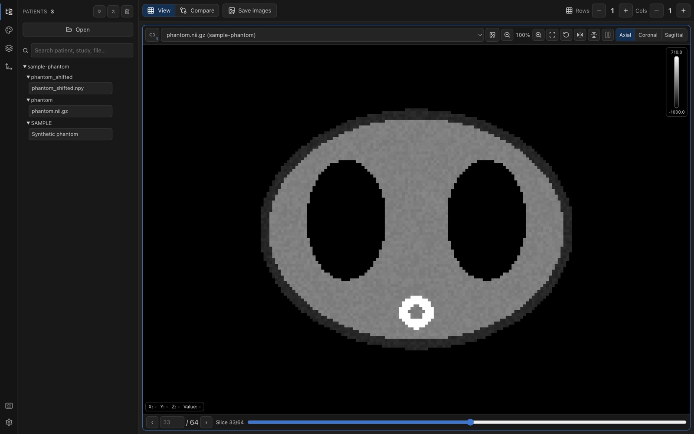
Patients 패널의 Open에서 파일이나 폴더를 고릅니다. 몇 개가 실패해도 나머지는 계속 열리고, 실패 이유는 Details에 남습니다.
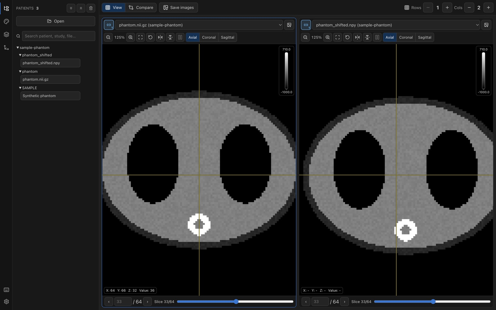
볼 뷰를 클릭하고 축을 고른 뒤 휠로 넘깁니다. Ctrl을 누르면 연결된 뷰에 같은 지점의 십자선이 뜹니다. 확대, 맞춤, 좌우·상하 반전은 뷰 위 툴바에 있습니다.
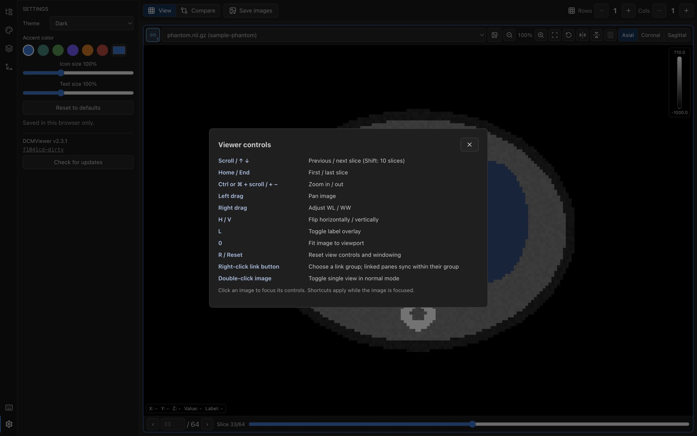
대부분은 마우스와 키보드로 끝납니다. 단축키 목록은 앱 안의 Controls에서도 다시 볼 수 있습니다.
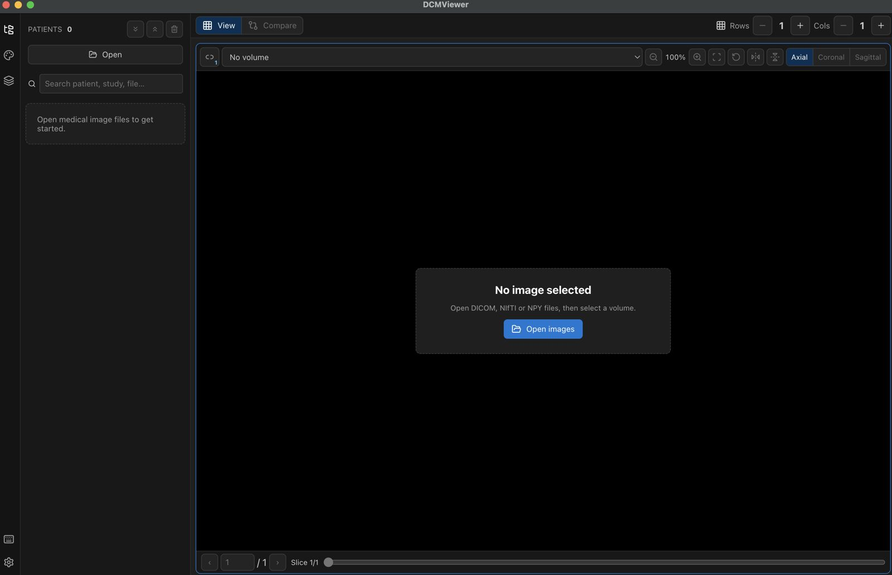
로컬 파일을 가장 빠르게 엽니다. 영상 정합도 이 컴퓨터에서 실행합니다.
$ npm ci $ npm run dev
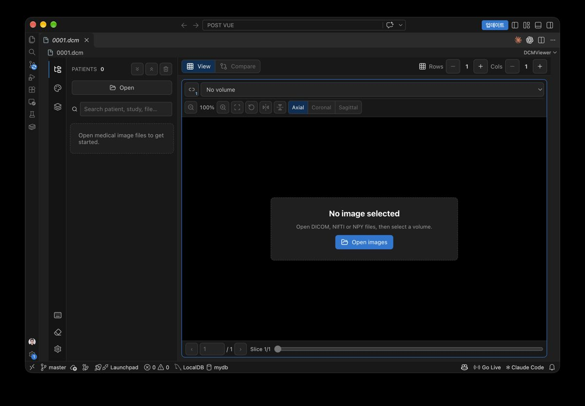
탐색기에서 영상 파일을 클릭하면 편집기 안에서 열립니다. SSH·컨테이너 작업 공간에서도 별도 서버 없이 동작합니다.
$ npm ci --prefix vscode-extension $ npm run package:vscode
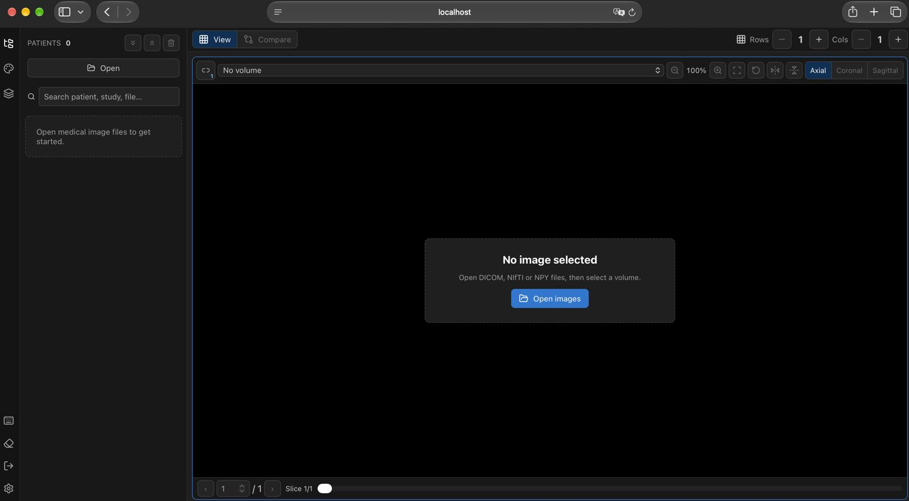
서버에 있는 CT 볼륨을 브라우저로 봅니다. 계정, 가입 승인, 관리 페이지가 있는 다중 사용자 플랫폼입니다.
$ docker compose up -d --build| Capability | Desktop | VS Code | Web |
|---|---|---|---|
| 볼륨 탐색 · 멀티뷰 · 비교 | 지원 | 지원 | 지원 |
| 라벨 오버레이 | 지원 | 지원 | 지원 |
| 영상 정합 | 로컬 실행 | — | 서버 실행 |
| 원격 단면 전송 | — | 지원 | 지원 |
| 계정 · 관리자 | — | — | 지원 |
아니요. DCMViewer는 읽기 전용입니다. 영상과 라벨 파일은 그대로 두고 WL/WW, 컬러맵, 확대 같은 표시 설정만 바꿉니다.
아직은 비압축 픽셀 데이터만 읽습니다. JPEG, JPEG-LS, JPEG2000으로 압축된 파일은 먼저 비압축으로 변환해 주세요.
비교 모드는 공간 정합을 하지 않습니다. 두 볼륨의 width와 height가 같으면 차이 영상을 만들고, depth가 다르면 상대 위치로 슬라이스를 대응시킵니다. 격자가 다른 영상은 Registration 패널에서 먼저 정합하세요. 라벨도 자동으로 리샘플링하지 않으니 영상과 같은 격자여야 합니다.
웹 플랫폼은 1 GiB 이하 볼륨을 한 번에 받아 메모리에 두고, 더 크면 단면 단위로 받으며 앞뒤를 미리 읽습니다. 원격 VS Code는 보이는 단면만 받고 메모리 64 MiB, IndexedDB 256 MiB 안에서 캐시합니다.
데스크톱 앱에서 처음 정합을 실행할 때 확인 창에서 허락하면 앱 데이터 폴더에 Python 패키지를 설치합니다(ConvexAdam 약 1 GB, ANTs 약 200 MB, elastix 약 1 GB). 이미 쓰는 Python이 있다면 DCMVIEWER_PYTHON으로 지정할 수 있습니다.
설치 파일은 GitHub Releases에 있습니다. 저장소를 내려받아 소스에서 바로 실행해도 됩니다.
Ctrl 호버로 연결된 모든 뷰에 같은 지점을 표시하고, 링크된 뷰의 확대와 이동을 맞춥니다.
NPZ 배열별 볼륨 열기, 뷰·그리드 PNG 저장, 정합 결과 .npy 저장.
ConvexAdam, ANTs, elastix 정합과 Python 패키지 자동 설치.
웹에서 내 컴퓨터 파일 열기와 업로드, Docker 실행.
Free · Open source · Read-only
설치 파일을 받거나 저장소를 내려받아 바로 실행하세요. 첫 볼륨을 여는 데 몇 분이면 충분합니다.